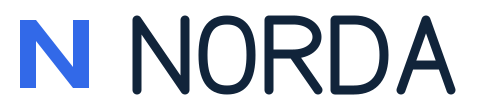
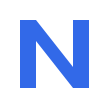

Autorska koncepcja • marki fikcyjne
Jeden system.
Dwie powiązane marki.
Norda reprezentuje producenta technologii. Plico przedstawia produkt do pracy z dokumentami. Wspólne kształty i typografia tworzą czytelną relację, a osobne kolory pomagają odróżnić każdą markę.
To własna demonstracja projektu i plików edytowalnych.
NORDA
Producent technologii





PLICO
Produkt do pracy z dokumentami


Szablony prezentacji
Cztery układy z natywnymi tekstami oraz dwiema edytowalnymi tabelami. Podglądy pochodzą z ponownego importu finalnego pliku PPTX.
Pliki do obejrzenia
PowerPoint PPTXOferta Word DOCXOferta PDF z WordaKomplet źródeł ZIP
DOCX zawiera natywne akapity i tabelę oraz osadzony font. PDF jest rzeczywistym, sprawdzonym eksportem tego dokumentu z Worda. Źródła logo są SVG. Font z licencją i zasady użycia plików znajdują się w paczce.